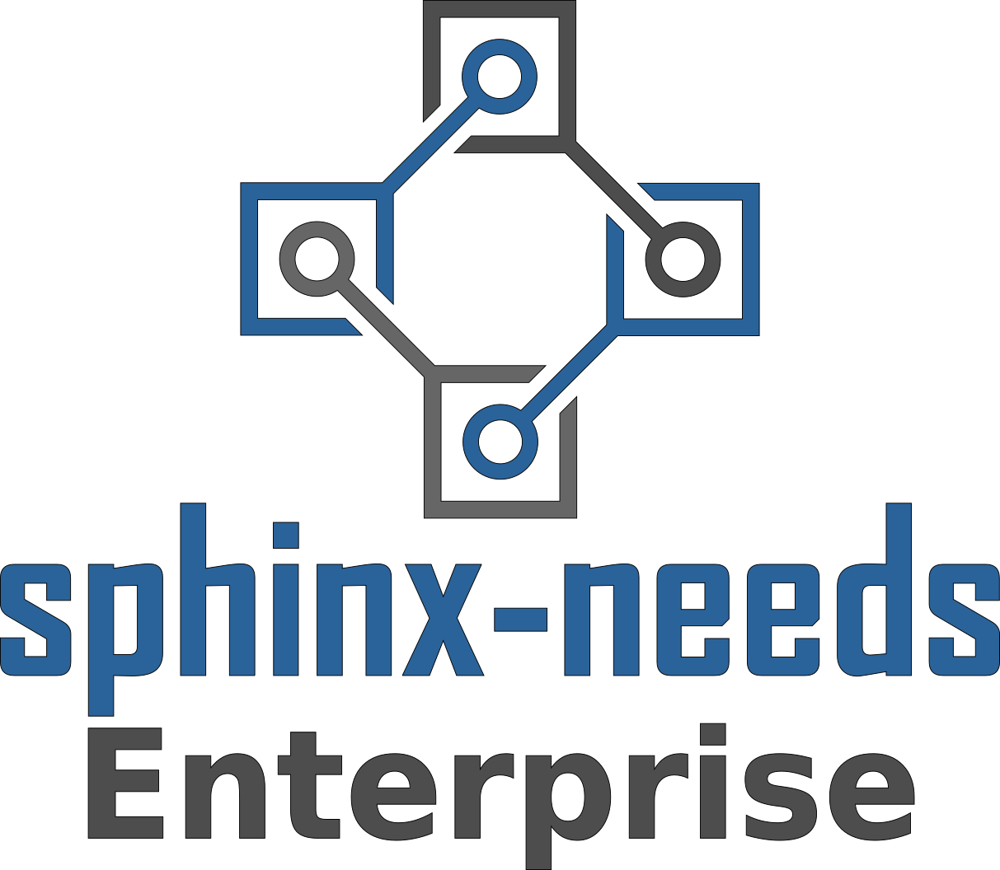

Becoming reliable
{kind=link}
{kind=link}
What is Sphinx-Needs?
A highly customizable, free and open ALM solution for developers to enhance their productivity to a new maximum.
Features
Objects of different types
Link objects
Analyse objects with tables, flow and pie charts
Define custom options, layout and styles
Automate data calculation
Im/Export data from/to external systems
➔ All as Docs-As-Code
Input
Here is a requirement for **code quality**:
.. req:: Python code must be PEP8 compliant
:id: REQ_PY_PEP8
:status: closed
:tags: python, quality
:style: yellow, red_border
The python code of our product must follow
`PEP8 <https://www.python.org/dev/peps/pep-0008/>`_.Result
Here is a requirement for code quality:
The python code of our product must follow PEP8. |
Analysis
.. needtable::
ID |
Title |
Status |
Type |
Outgoing |
Tags |
|---|---|---|---|---|---|
Python code must be PEP8 compliant |
closed |
req |
python; quality |
||
Use flake to check PEP8 |
closed |
spec |
|||
Quality tests |
open |
test |
Analysis 2
.. needflow::
![@startuml
' Nodes definition
node "<size:12>Requirement</size>\n**Python code**\n**must be PEP8**\n**compliant**\n<size:10>REQ_PY_PEP8</size>" as REQ_PY_PEP8 [[../why_enterprise_license.html#REQ_PY_PEP8]] #BFD8D2
node "<size:12>Specification</size>\n**Use flake to**\n**check PEP8**\n<size:10>SPEC_FLAKE</size>" as SPEC_FLAKE [[../why_enterprise_license.html#SPEC_FLAKE]] #FEDCD2
node "<size:12>Test Case</size>\n**Quality tests**\n<size:10>TEST_SW_QUALITY</size>" as TEST_SW_QUALITY [[../why_enterprise_license.html#TEST_SW_QUALITY]] #DCB239
' Connection definition
SPEC_FLAKE --> REQ_PY_PEP8
TEST_SW_QUALITY --> SPEC_FLAKE
@enduml](_images/plantuml-e323f9867fda628d5b2fa444f67f0abdc870973d.svg)
Analysis 3
.. needpie::
And Sphinx-Needs-Enterprise?
A collection of tools and scripts to embedded Sphinx-Needs inside companies tool environments.
➔ One-Stop-Shop of Truth
Connectors
Im- and Export of data from:
CodeBeamer
Azure Boards
Jira
GitHub Enterprise
… any other tool with a REST API
File Handlers
Work with data formats like:
ReqIF (e.g. supported by DOORS)
Ms Excel/Word
… company specific tools
Databases
Open Needs DB
ElasticSearch
… any other document-based DB
Viewers
Filter and analyse data across documentations and projects:
Standalone needs viewer
Embedded viewer for Sphinx documentations
VS Code viewer
… any other IDE with Extension support
Editors
Write, link and configure Needs with technical support:
VS Code Language Server
Intellij / PyCharm Language Server
Theme
Custom Sphinx theme with company focused features:
Embedded Viewers
Additional areas for information
Static links to other tools
Badges for real-time data (e.g. build status)
Enhancement for huge documentations:
Long, complex TOC and sidebars
Search across documentations
Business Model
Why is it needed?
Challenges
Sphinx-Needs is mainly used by process driven companies.
Users may not be allowed to support Open Source projects.
Users don’t spend after-work hours.
➔ Tough community building
Challenges 2
Fast reaction time may be needed.
Problems may be company specific and can’t be openly discussed.
Maintenance shall be independent from customers and projects.
➔ An ongoing income is needed to get 1-2 full-time developers on it.
Constraints
We love Open Source
One ring/product to rule them all
Business Source License
Eventually?
It’s free for ALL.
Except you fulfill the usage limitations (commercial usage).
It’s open after 4 years.
Released under GPL/MIT.
No usage limitations anymore.
Open code, docs and issue tracker all the time.
Secured usages?
Yes, but with textual hints only.
During installation.
In outputs, logs and maybe in results.
Software will work all the time.
But with on-the-fly license checks.
Thanks
Example Data
1
2
Provides some test cases to check if “dirty” code gets detected by Flake8, which was introduces by Use flake to check PEP8 (SPEC_FLAKE) |